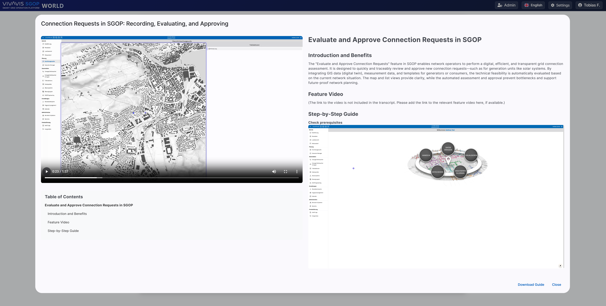
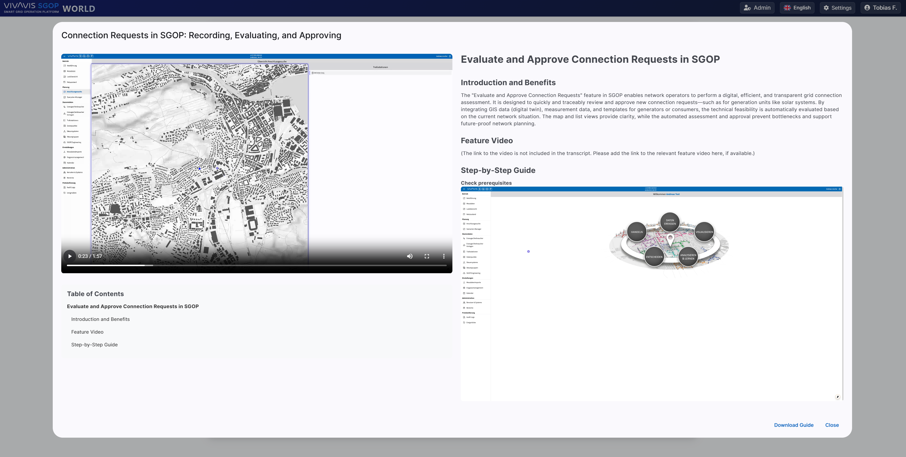

SGOP World: An AI-Powered Knowledge Ecosystem for Grid Operations
WorkSGOP World represents a revolutionary knowledge platform that fundamentally transforms traditional document access in grid operations. The core challenge was to create a highly secure, scalable, and intelligent environment that enacts a paradigm shift from reactive document searching to proactive, context-aware knowledge discovery.
AI-Powered Knowledge Synthesis (RAG)
The heart of the platform is an advanced Retrieval-Augmented Generation (RAG) architecture. Instead of conventional keyword searching, the system uses AI embeddings and "Deep Retrieval" logic to understand the semantic meaning of queries. The "Smartfox Assistant" allows users to ask complex questions in natural language and receive precise, contextual answers directly from a vast corpus of operating manuals and regulatory documents, including direct links to the source.
Key Features
- Advanced RAG (Retrieval-Augmented Generation) architecture for intelligent document retrieval
- Autonomous agent workflows with n8n pipelines for content lifecycle management
- Scalable cloud-native architecture on Microsoft Azure with Kubernetes
- Centralized security with KeyCloak and role-based access control (RBAC)
- Intelligent document processing using Azure Cloud Functions and custom built pipelines
- Natural language query interface with the "Smartfox Assistant"
Technology Stack
Frontend
Angular, TypeScript, HTML, CSS
Backend
Python, Flask, n8n
AI & Machine Learning
RAG, AI Embeddings, Openai Finetuned Models, Azure AI Services, Elevenlabs, DubbleAI
Cloud & DevOps
Microsoft Azure, Kubernetes, Azure Cloud Functions
Security
KeyCloak, RBAC
Database
PostgreSQL, Qdrant (Vector DB) Azure Blob Storage